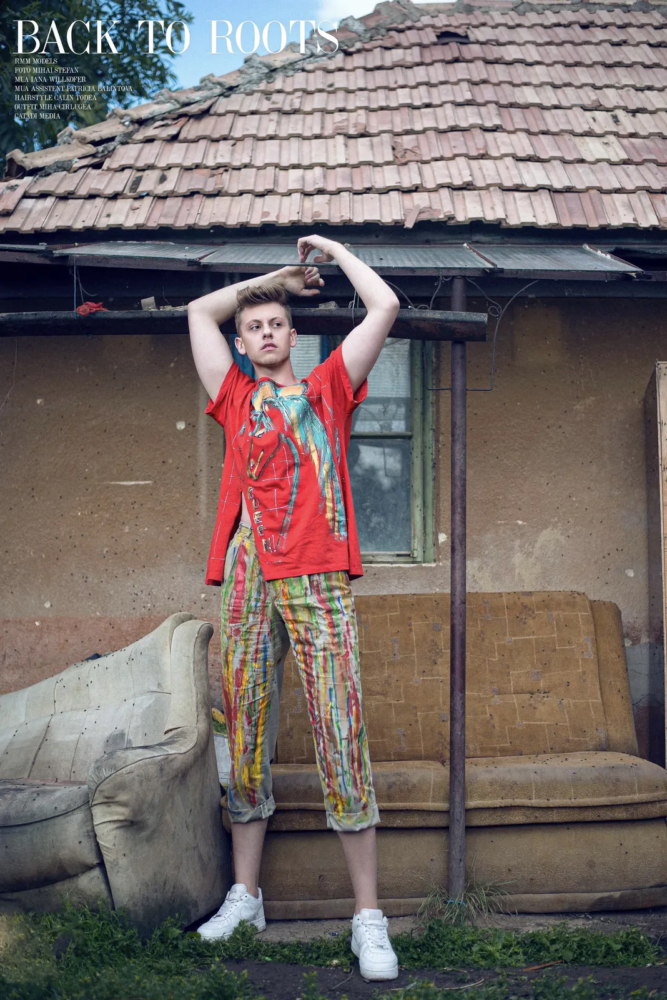

71885 / London
TIBERIU
Tiberiu Ungurianu · TikTok · London
Scroll to explore ↓
02 / About
A little
about me.
A personal space for the things I make, wear, shoot and share.
I've been posting online since 2020, sharing whatever I'm into at the time.
I've also worked as a model for several years, mainly in Romania, and I'm now based in London.
Based in
London, UK
Height
191 cm / 6'3"
Online since
2020
Modelling
Romania / London
03 / Modelling
Selected
shots.
A selection of modelling and editorial images.
01 / Beauty
02 / Close-up
03 / Fashion
04 / Campaign

05 / Editorial04 / Around the web
Around
the web.
A few other places you can find me.